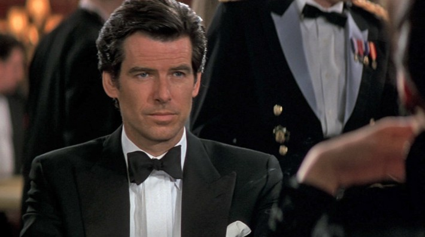
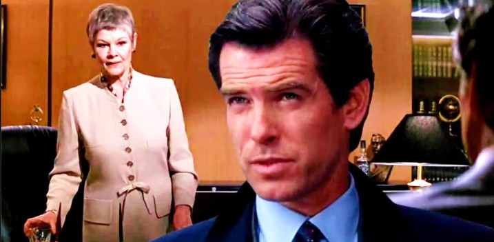

The Cold War Dinosaur That Reconquered the World: How GoldenEye Saved James Bond
When Pierce Brosnan stepped off the bungee platform on the Verzasca Dam in the opening moments of 1995’s GoldenEye, he wasn’t just diving into a secret Soviet chemical facility. He was plunging into an uncertain future for cinema's longest-running film franchise.
In the mid-1990s, James Bond was widely considered an endangered species. The fall of the Berlin Wall in 1989 had dissolved the geopolitical conflict that gave birth to Ian Fleming’s superspy, leaving Hollywood commentators asking a simple question: Does Agent 007 still matter in a post-Cold War world?
GoldenEye didn't just answer that question. It grossed $356.4 million globally, shattered franchise records, and established the definitive template for modern action filmmaking.

The Six-Year Dark Age
To understand the triumph of GoldenEye, one must appreciate how close the Bond franchise came to extinction.
Following 1989’s Licence to Kill, which was Timothy Dalton’s second and final outing, the franchise became entangled in a complex legal battle over distribution rights between Danjaq (the parent company of EON Productions) and MGM. The resulting six-year hiatus was the longest gap between Bond releases in history at the time.
During this lay-off, the landscape of blockbuster cinema changed radically:
- Action evolved: Films like Terminator 2: Judgment Day (1991), Speed (1994), and True Lies (1994) raised audience expectations for grand visual effects and practical stunts.
- Geopolitics shifted: The collapse of the Soviet Union eliminated the classic "Us vs. Them" espionage paradigm.
- Cultural norms moved on: Critics questioned whether an overtly womanizing, state-sanctioned killer belonged in 1990s pop culture.
Producer Barbara Broccoli and director Martin Campbell recognized that bringing Bond back required more than just a new actor; it demanded an ideological update.
The gap also meant that an entire generation of moviegoers had grown up without a new Bond adventure arriving every other year. The series that had once been a dependable fixture of the cinema calendar had turned into something closer to a memory, and the studio and producers could not assume that audiences would simply return. GoldenEye therefore had to work twice: as a new film and as proof that the franchise still deserved a place in the multiplex.
A Long Wait for Brosnan
The casting of Pierce Brosnan was itself a story of delayed opportunity. The actor had been considered for the role years earlier, but his television commitment to Remington Steele kept him from taking it when it first became available, and the part went to Timothy Dalton instead. By the time the franchise returned, Brosnan was free, and producers found in him a lead who combined the polish of the earlier Bond era with a modern, slightly wry sensibility.
His performance threads a delicate line. He plays Bond as confident and charming, but also as someone whose certainty is tested by the people around him. That balance became the template for his tenure: a hero who could still deliver a one-liner and a tuxedo entrance, yet who was no longer presented as beyond criticism.
Addressing the Elephants in the Room
Rather than ignoring Bond's outdated tropes, screenwriters Jeffrey Caine and Bruce Feirstein made his potential irrelevance the emotional and thematic core of GoldenEye.
1. The "Sexist, Misogynist Dinosaur"
Perhaps the most pivotal scene in the film occurs inside M’s office. In a bold casting choice, Dame Judi Dench took over the role of M, becoming the first woman to lead MI6 on screen.

When Bond attempts to charm his new supervisor, she shuts him down with razor-sharp precision:
"I think you're a sexist, misogynist dinosaur. A relic of the Cold War, whose boyish charms, though wasted on me, obviously appealed to that young woman I sent out to evaluate you."
By explicitly voicing the exact criticisms surrounding the franchise, the filmmakers effectively neutralized them. Bond was no longer immune to modern scrutiny; he was operating in a world that questioned his worth.
The scene works because it is played as drama rather than as a joke at the character’s expense. Dench delivers the line with calm authority, and Brosnan’s reaction shows that Bond understands he has met someone he cannot easily charm. The exchange sets up the dynamic that would define several later films, in which M acts as the franchise’s moral and professional counterweight, and it gave the series a way to acknowledge its own history without abandoning it.
2. A Rogue Mirror Image: Alec Trevelyan
To challenge Bond’s unyielding loyalty to queen and country, GoldenEye introduced Sean Bean as Alec Trevelyan (Agent 006). As a former colleague turned rogue mastermind, Trevelyan served as Bond's dark alter ego. His betrayal, which was motivated by Britain’s historical post-WWII betrayal of his Cossack parents, forced 007 to confront the moral gray areas of state intelligence in a post-Cold War world.
The opening sequence establishes the relationship between the two men before the story turns on them. Both are shown working together on a dangerous mission in the Soviet facility, and the friendship that is visible there gives the later betrayal real weight. Because Trevelyan is a peer rather than a distant villain, the conflict becomes personal, and the film can ask whether Bond, who also kills on behalf of a government, is really so different from the man he has to stop.
3. Women Who Drive the Plot
The film also expanded the role of its female characters. Izabella Scorupco plays Natalya Simonova, a programmer who survives the attack on a Russian space installation and becomes a capable ally rather than a passive bystander, while Famke Janssen plays Xenia Onatopp, a villain whose physicality and menace made her one of the series’ most memorable antagonists. Samantha Bond joined as Miss Moneypenny, bringing a more pointed, modern tone to the character’s exchanges with 007.
Raising the Bar for Practical Action
Under the direction of Martin Campbell, GoldenEye blended classic practical stunt work with cutting-edge 1990s visual pacing.
| Key Sequence | Filming Highlight & Legacy |
|---|---|
| Verzasca Dam Bungee Jump | Performed by stuntman Wayne Michaels, this set a world record for the highest bungee jump from a fixed structure on film. |
| St. Petersburg Tank Chase | Filmed over several weeks using a modified Russian T-54/55 tank, creating an iconic urban destruction sequence. |
| Arecibo Dish Finale | A thrilling climax filmed at the giant radio telescope in Puerto Rico, grounding high-tech espionage in tangible physical danger. |
What links these set pieces is a sense of physical scale. The dam jump opens the film with a drop that audiences could believe was real, the tank chase turns a city street into a playground of destruction with a hero who stays composed in the middle of it, and the finale uses a real structure as its stage. In the same era in which computer-generated effects were beginning to take over the blockbuster, the film leaned on real locations and real stunt work, and that choice helped it feel more tangible than many of its contemporaries.
Sound and Song
The film’s music also announced a new era. The title song was written by Bono and The Edge of U2 and performed by Tina Turner, which gave the franchise a contemporary pop identity while still delivering the dramatic, brassy style associated with Bond themes. The score and the sound design, in turn, supported the film’s more modern pacing, with action scenes edited for momentum rather than for the slower rhythm of earlier entries in the series.
The Cultural Ripple Effect
GoldenEye’s impact extended far beyond cinema screens:
- Box Office Savior: Made on a budget of approximately $60 million, the film grossed $356.4 million worldwide, becoming the highest-grossing Bond film up to that point (unadjusted for inflation).
- Video Game Revolution: Two years later, developer Rare released GoldenEye 007 for the Nintendo 64. The game became a landmark achievement in gaming history, inventing modern console FPS mechanics and local 4-player split-screen multiplayer.
- The Martin Campbell Blueprint: Campbell proved so adept at reinventing 007 that EON brought him back a decade later to direct Daniel Craig's debut in Casino Royale (2006).
The film’s success also gave Brosnan a run as Bond that continued with Tomorrow Never Dies in 1997, and it restored the series to a regular release schedule. For a franchise that had gone six years without a new entry, that return to stability may have been as valuable as the box office total itself, because it reassured the studio and audiences that Bond could be counted on again.
Why the Comparison With Casino Royale Holds Up
The link between GoldenEye and Casino Royale is worth noting. Both films arrived after periods of doubt about the franchise, both introduced a new lead actor, and both were directed by Campbell. In each case the production treated a reinvention as a creative opportunity rather than a risk to be managed quietly. The earlier film showed that 007 could survive a change in the world around him, and the later one applied the same lesson to a new century.
Conclusion: A Masterclass in Re-invention
GoldenEye succeeded because it respected the legacy of James Bond while fearlessly challenging his identity. By acknowledging the changing geopolitical world, casting powerful female leads, and modernizing action sequences, the film proved that 007 was far more than a "relic of the Cold War." He was a timeless cinematic icon capable of adapting to any era.
More than three decades later, the film is still the standard against which many Bond relaunches are measured. Its strengths, a confident lead, a villain with a personal connection to the hero, and action grounded in real locations, remain the elements that audiences expect when the series begins a new chapter. That lasting influence is the clearest evidence that the film did more than rescue a franchise; it showed how a long-running series can acknowledge its past, answer its critics and move forward without losing what made it popular in the first place.
Sources & References
- Box Office & Production Stats: Wikipedia / Box Office Mojo (GoldenEye 1995 production overview).
- Director & Crew Interviews: SlashFilm retrospective on GoldenEye's commercial impact (citing director Martin Campbell & VFX supervisor Chris Corbould).
- Quotes & Script Analysis: Official film transcript (GoldenEye, MGM/UA Home Entertainment).